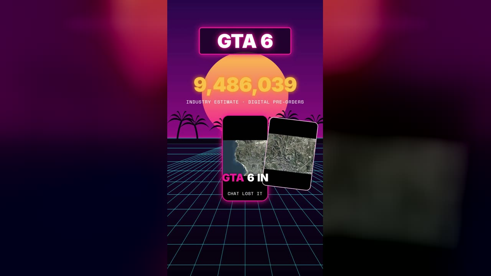

Clip GTA 6 streams live while you sleep
GTA 6 launches November 19 on PlayStation and Xbox only, with no PC date, so launch week happens on clips. Most clippers wait for the VOD, download the whole night and scan it. This watches the stream live instead and cuts the moments as chat explodes. Tested on a live GTA stream on 18 November.
The reel this guide comes from.
What it does
- Streamlink records the stream the second it goes live.
- Twitch chat is read anonymously: no account, no token.
- Every 10 seconds it counts chat messages. When chat jumps far above the last 5 minutes, that's a spike.
- FFmpeg cuts 30 seconds around each spike, cropped to vertical 9:16.
- faster-whisper writes the captions (an .srt file, or burned in with
--burn).
Install it (about 10 minutes, once)
Install Python and FFmpeg
Python 3.10 or newer from python.org, then FFmpeg:winget install ffmpegon Windows,brew install ffmpegon Mac.Install the two Python tools
pip install streamlink faster-whisper
Download the script
Put it in an empty folder. Download clip_watcher.pyRun it with the streamer's Twitch name
python clip_watcher.py STREAMERNAME --burn
It waits until they go live, then records. Clips land in./clips, the full recording in./recordings. Stop with Ctrl+C.Tuning:
--window 30is the clip length,--min 25the minimum messages per 10 seconds,--sigma 2.5how sensitive it is (lower = more clips). On big streamers, raise --min to 60 or more.
Or let Claude Code build it for you
Paste this in Claude Code and it writes the tool itself:
Build me a Python tool called clip_watcher.py that clips a Twitch stream live: 1. wait until the channel is live, then record it with streamlink to recordings/ 2. read Twitch chat anonymously over IRC (nick justinfan12345, no token) 3. count chat messages every 10 seconds; mark a spike when the count is above the average of the last 5 minutes by 2.5 standard deviations and above 25 4. 20 seconds after each spike, cut 30 seconds around it with ffmpeg, cropped to 1080x1920 5. caption each clip with faster-whisper on CPU (decode audio with ffmpeg) into an .srt, and burn it in when I pass --burn Install what's missing, then test it on a channel that's live right now for 3 minutes with low thresholds and show me the clips.
Fifty clips by morning. Now pick the three that blow up.
The script finds the loud moments. Picking the ones worth posting, writing the hook line and cutting them so people watch to the end is the part that grows a page, and that's what I share in my community. Claude Code runs the rest of my content, even the DM that sent you here. Under a minute:
Under a minute, sound on. The presenter is my AI clone, made with the methods taught inside.
Join AI Virality Creators →$9/month until the group reaches 150 members, then $27/month. The price you join at stays yours.
What you get inside
A path for complete beginners
START HERE takes you from zero to your first consistent AI character, lesson by lesson. Then Go Viral: 8 short lessons and cheat sheets for Reels and TikTok.
Every reel I post, taken apart
The prompts, the edit choices and what each shot cost in credits. You copy what already worked instead of guessing.
Claude Code, in plain English
Master Claude Code: real builds with every file included. Claude writes the code; you say what you want and approve each step.
30+ courses on today's tools
Kling 3.0, Veo 3.1, Nano Banana Pro, ElevenLabs voices, UGC and cinematic ads, prompt systems, 4K upscaling.
Feedback from me
Post your video in the community. I read it and reply myself, and other members add their notes.
From skill to client work
Modules on finding your first clients, pricing what you make and delivering it like a pro.
Your first week
- Day 1. Join, introduce yourself and say what you want to make. I point you to the module that fits.
- Days 2–4. Build your first AI character in START HERE, one short lesson a night. (Here for Claude Code? Start Master Claude Code instead.)
- Days 5–6. Open a reel breakdown and copy its structure for your own idea.
- Day 7. Post your first video in the community and get feedback on it.
Stop saving tutorials. Start posting.
AI Virality Creators is my Skool community. Everything above is in one place, in order, and I answer you myself.
- Go Viral: 8 short lessons on hooks, captions and retention for short clips.
- Master Claude Code: real builds with every file, like this clipper.
- 30+ step-by-step courses and the breakdown of every reel, with prompts and credit costs.
- Personal feedback on what you post, next to 125+ creators building the same skills.
$9/month until the group reaches 150 members, then $27/month. The price you join at stays yours.
Before you join
I'm a complete beginner. Is this too advanced?
Not at all. START HERE assumes zero experience and goes in order: your first image, your first video, then a character that looks the same in every shot. If you can type a sentence, you can follow it.
I can't code. Do I need to?
You don't need to. For the Claude Code lessons you describe what you want in plain English, Claude writes the code, and you approve each step. Every lesson shows the exact clicks.
Do I need a Skool account? Can I use it on my phone?
Skool is the app the community lives in. Signing up is free and takes about a minute when you join, and it works in the Skool phone app or any browser. Watching lessons and posting work fine on a phone; Claude Code itself runs on a computer.
I don't have much time.
The lessons are short and numbered, so you always know which one is next. One lesson an evening keeps you moving, and the community keeps you posting.
Can't I learn all of this free on YouTube?
You can start there, and free guides like this one are made for exactly that. What you won't find for free: the right order, my real project files, the credit cost of every shot, and someone who looks at your video and tells you what to fix.
AI tools change every month. Won't it be outdated?
New tools get their own modules: Kling 3.0, Veo 3.1 and Nano Banana Pro are already in. The breakdowns teach how a reel is built, and that carries over to whatever tool comes next.
AI credits get expensive. What will I spend?
Every breakdown shows what each shot cost, so you know before you start. A lot of what I teach costs 0 credits, like the guide you're reading now.
Will I get lost in a big group?
It's around 125 people, small enough that new posts get answered. I reply myself, and members comment on each other's work.
Is the person in the video real?
The presenter is my AI clone, built with the same methods taught inside. I say so every time. The community is run by me, and I answer you myself.
Will this make me money?
I can't promise income. You get the skill, finished videos to show, and modules on finding clients and pricing your work. What you earn with them is up to you.
Is it only about video?
Video is the core. Master Claude Code is the second part: real builds with every file included, starting with the Night Shift experiment. Prompting, voices and client work are in there too.
What if it's not for me?
Cancel anytime in your Skool settings. You also have the guarantee: publish your first AI video within 30 days of joining, and if you can't, message me for a refund. The full terms are on the About page.
$9/month until the group reaches 150 members, then $27/month. The price you join at stays yours.
The honest catch
- It only works while they're live. You can't rewind a stream that already ended, so start it before the stream.
- Your computer has to stay on. It records the whole stream: plan about 1 to 3 GB per hour at 720p.
- The footage belongs to the streamer and Rockstar. Clip streams you have permission to use, and check each platform's rules for re-uploads.